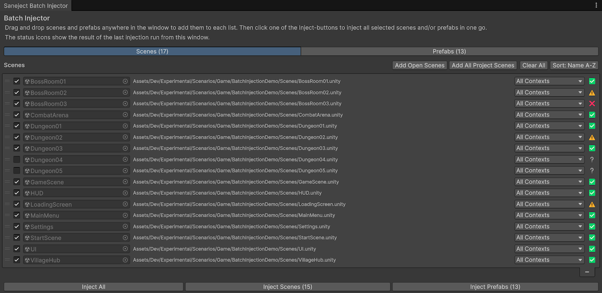
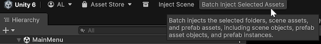
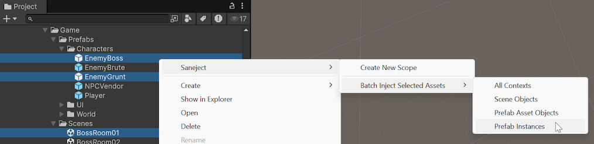
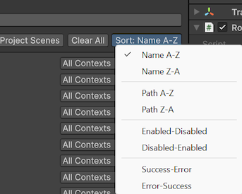
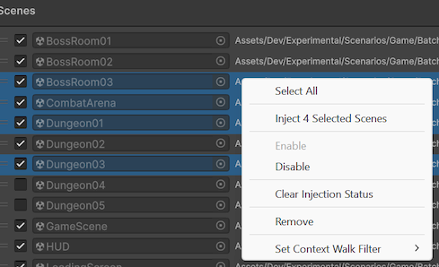
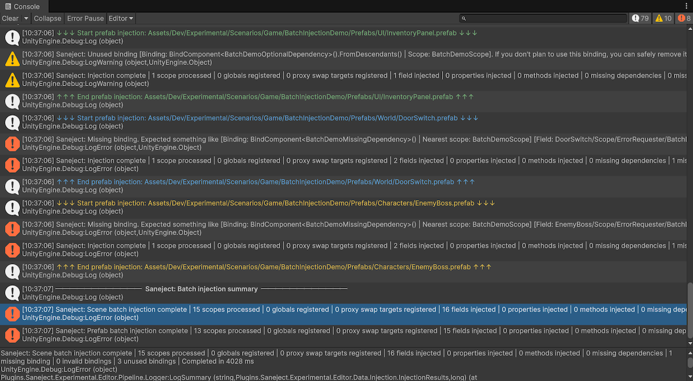

Batch injection
Batch injectionBatch injectionRunning injection across multiple selected scene and prefab assets in one operation. means running Saneject's normal editor injection pipelineInjection pipelineOrdered stages Saneject runs during injection, from graph build and context filtering through validation, resolution, assignment, and summary logging. across many assets in one operation.
Instead of opening one scene or prefab at a time and injecting manually, you can process a larger set of scene and prefab assetsPrefab assetReusable prefab definition in the Project window. in one run and review one consolidated console output.
This is especially useful when your project grows and you need frequent dependency validation across multiple content areas.
It is recommended to batch inject the project periodically or before builds to verify that all dependencies are correctly resolved and that there are no missing references.
Ways to run batch injection
1. Batch Injector window
The window is designed for repeatable, project-scale batch injectionBatch injectionRunning injection across multiple selected scene and prefab assets in one operation. runs with persistent scene/prefab lists and settings.

Menu path:
Saneject/Open Batch Injector Window
2. Selected assets from menus or toolbar
Use this when you want a targeted pass for a folder or a specific Project window selection.
Entry points:
- Main toolbar:
Batch Inject Selected Assets(ContextWalkFilter.AllContexts) - Project window context menu:
Assets/Saneject/Batch Inject Selected Assets/All Contexts - Project window context menu:
Assets/Saneject/Batch Inject Selected Assets/Scene Objects - Project window context menu:
Assets/Saneject/Batch Inject Selected Assets/Prefab Asset Objects - Project window context menu:
Assets/Saneject/Batch Inject Selected Assets/Prefab Instances - Main menu:
Saneject/Batch Inject Selected Assets/All Contexts - Main menu:
Saneject/Batch Inject Selected Assets/Scene Objects - Main menu:
Saneject/Batch Inject Selected Assets/Prefab Asset Objects - Main menu:
Saneject/Batch Inject Selected Assets/Prefab Instances


Batch Inject Selected Assets appears when the current Project selection includes at least one scene asset, prefab assetPrefab assetReusable prefab definition in the Project window., or folder that contains them.
The toolbar button is the quick AllContexts version.
The menu variants let you batch inject the same selection with SceneObjects, PrefabAssetObjects, or PrefabInstances.
Behavior:
- Saneject scans the current Project selection using deep asset selection.
- It keeps scene assets and prefab assetsPrefab assetReusable prefab definition in the Project window..
- It applies the
ContextWalkFilterselected by the toolbar button or menu item to every collected asset. - It optionally shows a confirmation dialog (controlled by
Ask Before Batch InjectinSaneject/Settings). - It asks whether modified open scenes should be saved.
- It injects the selected scenes and prefabs.
- It logs per-asset output plus a final batch summary.
The selected-assets menu variants do not remap filters per asset type. The chosen filter is forwarded as-is to every collected scene and prefab assetPrefab assetReusable prefab definition in the Project window., so a mixed selection only processes the contextsContextSerialization boundary Saneject uses during injection to decide scope traversal and candidate eligibility. that match that filter inside each asset.
Batch Injector window features
The window has two tabs:
ScenesPrefabs
Each tab shows a persistent reorderable list with these per-row controls:
- Enable toggle (
Enabled) - Asset object field
- Asset path (shows
Deletedif the asset no longer exists) ContextWalkFilterdropdown (restricted by asset type)- Injection statusInjection statusPer-run result classification used by batch injection rows: Unknown, Success, Warning, or Error. icon
Add, remove, and organize assets
You can populate lists by:
- Drag and drop scenes or prefabs into the window.
Add Open Scenes(Scenes tab).Add All Project Scenes(Scenes tab, scansAssets).Add All Prefabs In Current Scene(Prefabs tab).Add All Project Prefabs(Prefabs tab, scansAssets).
You can organize lists by:
- Manual reorder (switches sort mode to
Custom). - Sort menu options:
Name A-Z,Name Z-A,Path A-Z,Path Z-A,Enabled-Disabled,Disabled-Enabled,Success-Error,Error-Success.

List and window state are persisted to:
ProjectSettings/Saneject/BatchInjectorData.json
Multi-select and context menu actions
Both lists support multi-selection and a context menu with:
Inject Selected: Runs batch injectionBatch injectionRunning injection across multiple selected scene and prefab assets in one operation. only for the currently selected rows.Enable/Disable: Toggles whether rows are included when using the bottomInject AllandInject Scenes/Prefabsbuttons.Clear Injection Status: Resets selected rows toUnknownwithout changing their enable state or filter.Remove: Deletes selected rows from the list (does not delete assets from the project).Set Context Walk Filter/...: Applies the chosenContextWalkFilterto all selected rows.

Input shortcuts:
Ctrl/Cmd + Aselects all rows in the active tab.Escclears selection in the active tab.
Inject buttons
Bottom buttons run injection for enabled rows:
Inject AllInject ScenesInject Prefabs
Inject Selected from the row context menu injects the selected rows directly, even if some of those rows are disabled.
Injection status meanings
In the Batch InjectorBatch InjectorEditor window for preparing and running batch injection with per-asset enable state, status, and ContextWalkFilter. window, each row has a status icon with one of these meanings:
| Icon | Status | Meaning |
|---|---|---|
| ❔ | Unknown |
No run has set status yet, or status was cleared. |
| ✅ | Success |
No unsuppressed errors and no unused bindingsBindingInstruction declared in a Scope that tells Saneject what to resolve, how to inject it, and where to search. for that asset run. |
| ⚠️ | Warning |
No unsuppressed errors, but one or more bindingsBindingInstruction declared in a Scope that tells Saneject what to resolve, how to inject it, and where to search. were unused. |
| ❌ | Error |
One or more unsuppressed errors were logged. |
Logging model for batch runs
Batch logging is scoped in layers:
- A batch header for scenes and/or prefabs.
- Per-asset start/end markers so each asset run is visually separated in the console.
- Normal injection logs inside each asset section, including errors and a per-asset summary line.
- A final batch summary section with aggregated scene and prefab summaries and elapsed times.
If no Scope components are found in a run, Saneject logs that nothing was injected for that run.

Logging output is affected by user settingsUser settingsSaneject settings scoped to one Unity user on one machine, stored in EditorPrefs and available from Saneject/Settings -> User Settings. in Saneject/Settings, including:
Clear Logs On InjectionLog Injection SummaryLog Unused Bindings
For more information on logging, see Logging & validation.
Context filter rules in batch injection
ContextWalkFilter can be chosen in two places:
- Per run from the
Batch Inject Selected Assets/...menu variants. - Per asset in the Batch InjectorBatch InjectorEditor window for preparing and running batch injection with per-asset enable state, status, and
ContextWalkFilter. window.
Selected-assets batch menu variants use these labels:
All ContextsScene ObjectsPrefab Asset ObjectsPrefab Instances
Those commands apply the chosen filter to every collected asset in that run.
Allowed values depend on asset type:
| Asset type | Allowed ContextWalkFilter values |
|---|---|
| Scene asset | AllContexts, SceneObjects, PrefabInstances |
| Prefab assetPrefab assetReusable prefab definition in the Project window. | AllContexts, PrefabAssetObjects, PrefabInstances |
For details on filter semantics, see Context.
Batch injection pipeline overview
Batch injectionBatch injectionRunning injection across multiple selected scene and prefab assets in one operation. uses the same core pipeline as regular injection.
For each asset, Saneject:
- Builds an injection graphInjection graphHierarchy model built from selected root hierarchies. It contains transform, component, scope, binding, and injection-member information used by the edit-time pipeline. from start transforms.
- Applies the selected
ContextWalkFilter. - Builds an
InjectionContextfrom active transforms, components, scopesScopeMonoBehaviourthat declares bindings for a part of your hierarchy., and bindingsBindingInstruction declared in aScopethat tells Saneject what to resolve, how to inject it, and where to search.. - Validates bindingsBindingInstruction declared in a
Scopethat tells Saneject what to resolve, how to inject it, and where to search.. - Resolves globals, fields/properties, and methods.
- Injects values and marks modified objects dirty.
- Collects runtime proxyRuntime proxy
ScriptableObjectplaceholder asset (RuntimeProxy<TComponent>) injected into interface members at editor time and swapped to the real instance during scope startup. swap targets. - Logs errors, warnings, and summary counts.
Batch-specific orchestration:
- Scene batch opens each scene in
OpenSceneMode.Single, injects from scene root objects, and saves each processed scene. - Prefab batch loads each prefab assetPrefab assetReusable prefab definition in the Project window. root, injects from that root, and saves assets when prefab processing completes.
If a saved active scene existed when the batch started, Saneject re-opens that scene at the end.